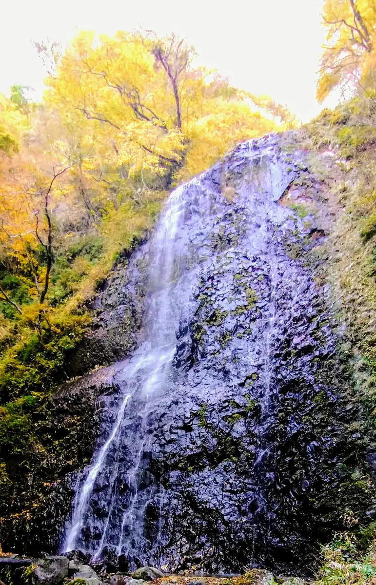
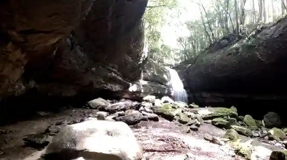

Toon
Toon · Ehime
Toon
Highlighted on the Ehime map.

Stay
Kutsurogi no Yado Ki Raku (Kyu : Ken Nara Tennen Onsen Riraku)
Furiideizuin Yokogawa Hara
Taki no Moto Kondo Ie
private your resort ITTEKURAi Matsuyama
Furiideizu Resort Sakura Sanri
Kondo Iebetsu Tei Glamping KASUMI Hana Sumi
Dining
Peru Meru
Manifiiku
Poemu Suiitsu Park
Pateisurii Kokoro Ketsu
Sateiwan'aisukuriimu Shigenobu Fujiguran Mise
Nosambutsu Chokubai Tokoro Sakura Market
Karage Shokudo Goichi Fujiguran Shigenobu Mise
Biadopapa Fujiguran Shigenobu Mise
Famiriimato Zenno Furesshu Hiroba Mise
Tsukiji Gin Dako Fujiguran Shigenobu Mise
Wakatake
Serufu Sanuki Udon Kodawari Seimen
Mero (MELLOW)
Buranjierii Mezon Tsuji
Joifuru Ehime Toon Mise
Ichiroku Honpo Shigenobu Mise
Onsen
Kutsurogi no Yado Ki Raku (Kyu : Ken Nara Tennen Onsen Riraku) Rotemburo
Sights
Shirai Falls
Namerikawa Gorge

Botchan Gekijo
Takahata Kasho Taisho Roman Kan